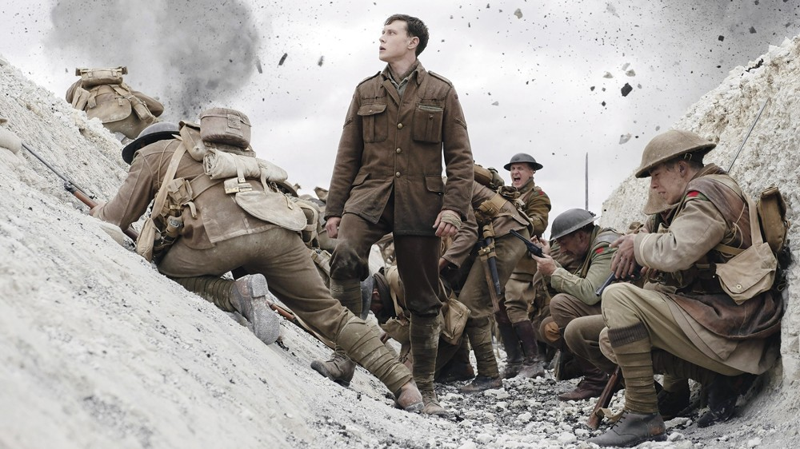
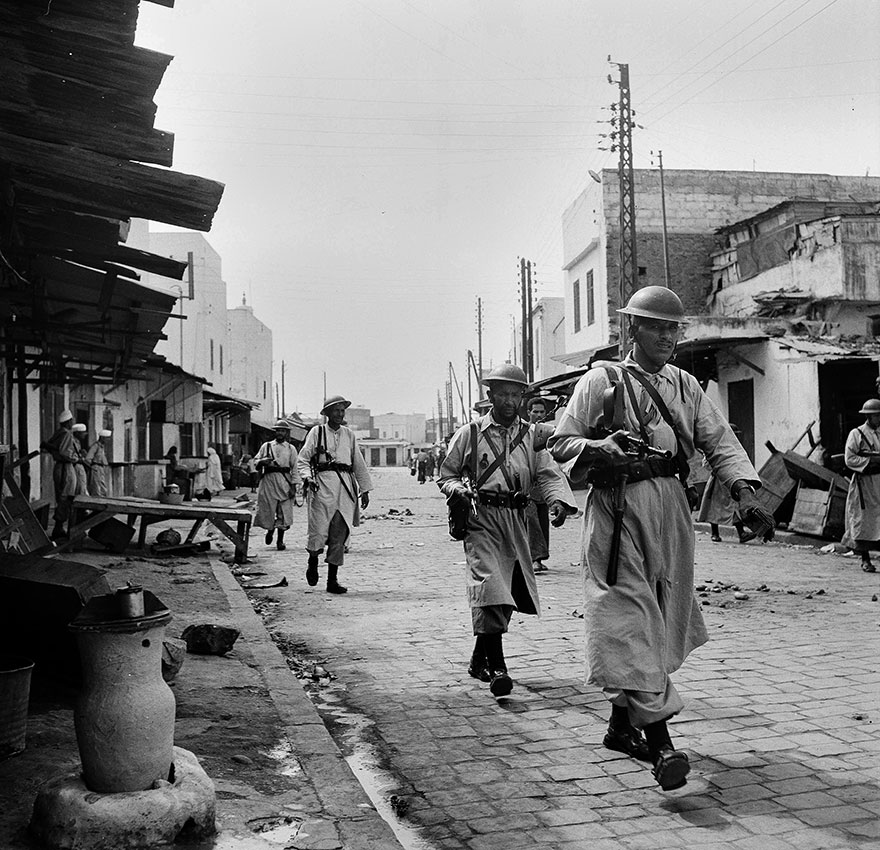
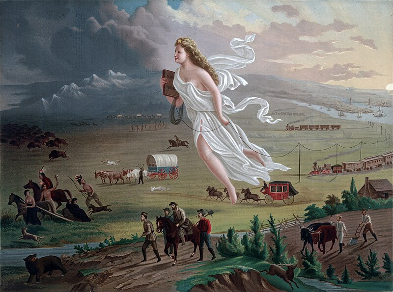

Atividades Humanas:
Primeiro Trimestre
Filme 1917

Nessa atividade, o professor passou um filme sobre a Primeira Guerra Mundial, "1917", e depois tínhamos que responder algumas perguntas.
Competências e habilidades: C3 H15 H16
Link Da Atividade
Imperialismo no séc. XIX (Neocolonialismo)

O objetivo da atividade era escolher um país que sofreu com o processo de colonização após a 2ª Revolução Industrial. Eu escolhi Marrocos.
Competências e habilidades: C6 H39
Link Da Atividade
O imperialismo na América

Analisamos a pintura "American Progress" e respondemos algumas perguntas sobre o que a pintura representava e a que ela fazia referência.
Competências e habilidades: C3 H15 H16
Link Da Atividade
Segundo Trimestre